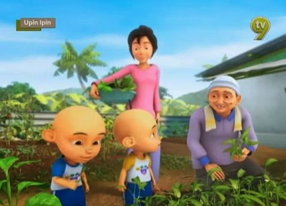
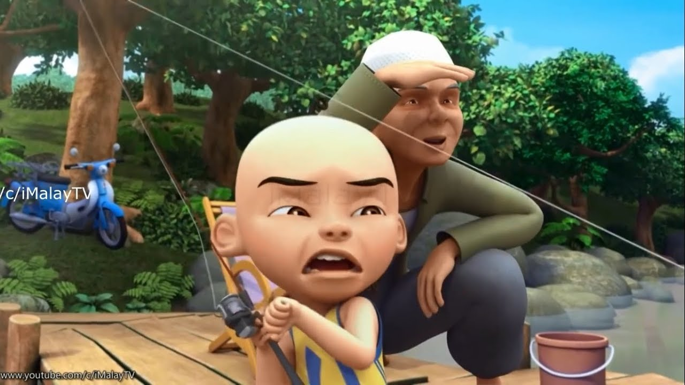

Upin & Ipin adalah sebuah serial televisi animasi kartun anak-anak Malaysia yang dirilis pada tanggal 14 September 2007 yang ditayangkan di TV9, RTM2, MNCTV dan Kids TV. Serial ini yang diproduksi oleh Les'Copaque Production. Awalnya film ini bertujuan untuk mendidik anak-anak agar lebih mengerti tentang Ramadhan sebelum film Upin & Ipin Geng: Pengembara Bermula dirilis. Kini, Upin & Ipin sudah memiliki tujuh belas musin tayang. Di Indonesia, Upin & Ipin hadir di MNCTV dan Kids TV secara bersamaan, juga ditayangkan di stasiun televisi berlangganan yaitu Disney Channel. Serial ini berdurasi selama 10-20 menit dalam setiap episodenya.
Upin dan Ipin merupakan sepasang kembar yang berusia lima tahun (Upin lebih tua lima menit dari Ipin) yang tinggal bersama Kak Ros dan Mak Uda yang biasa dipanggil Opah di Kampung Durian Runtuh setelah kematian kedua orang tua mereka sewaktu bayi. Upin dan Ipin bersekolah di tadika mesra yang terletak dalam kawasan kampung, dimana mereka berteman dengan banyak teman yang bermacam-macam tingkah lakunya, seperti Mei Mei yang imut dan berkepribadian cerdas, Jarjit Singh yang gemar membuat humor dan membuat pantun, Ehsan yang cerewet dan suka makan, Fizi yang penuh percaya diri tetapi suka mengejek teman-temannya dan Mail yang hobi berjualan. Kampung Durian Runtuh juga didatangi oleh seorang gadis bernama susanti yang merupakan pindahan dari Jakarta, Indonesia.

Berkebun adalah kegiatan memanfaatkan sebidang tanah atau lahan sebagai tempat menanam tumbuhan. Kegiatan tersebut bisa dilakukan dengan sengaja maupun tidak sengaja. Berkebun bukan hanya sekedar menanam dan merawat tumbuhan saja, ternyata kegiatan berkebun juga memiliki dampak untuk menjaga kesehatan mental dan fisik. Salah satu manfaat berkebun adalah tubuh bisa memproduksi vitamin D. Sebab, jika berkebun di pagi hari kita biasanya akan terpapar sinar matahari. Berkebun adalah kegiatan yang melibatkan penanaman dan perawatan tanaman di area tertentu, baik itu dihalaman rumah, di lahan pertanian atau bahkan di pot-pot kecil di dalam ruangan. Selain sebagai hobi yang menyenangkan, berkebun juga memiliki manfaat yang sangat beragam bagi individu dan lingkungan sekitar.

Memancing diartikan sebagai kegiatan menangkap ikan yang bisa menjadi pekerjaan, hobi, olahraga luar ruang (outdoor) atau kegiatan di pinggir, ditengah danau, laut, sungai dan perairan lainnya dengan target ikan. Memancing merupakan salah satu kegiatan fisik atau olahraga besar. Memancing dapat juga menghilangkan penat dan stress. Manfaat mancing selain hobi ternyata bisa menghilangkan stress akibat banyak tumpukan pekerjaan di kantor atau tempat kerja. Kejenuhan yang diembankan akan berangsur-angsur berkurang, apalagi saat memancing mendapatkan ikan. Para penggemar memancing menikmati memon ketika mereka melempar umpan ke dalam air, menunggu dengan sabar, dan merasakan kegembiraan saat ikan mengigit kail. Selain menjadi hobi yang menyenangkan, memancing juga memiliki manfaat yang mendalam.